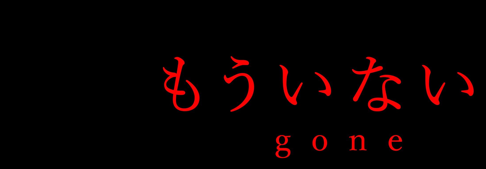
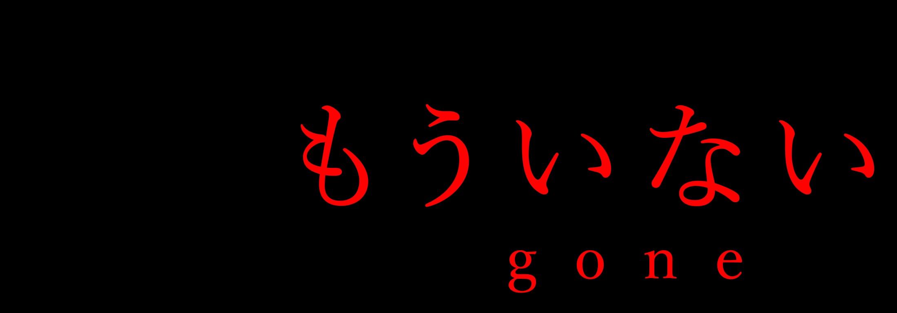
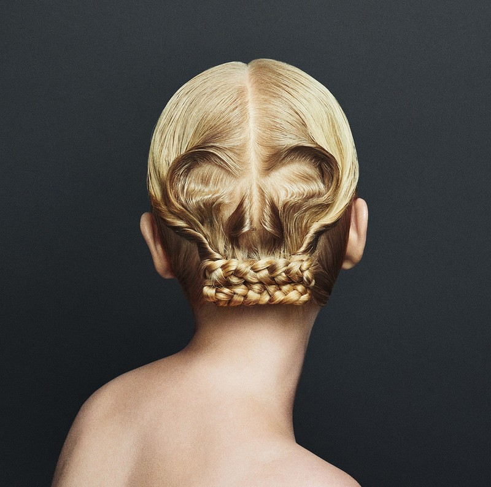
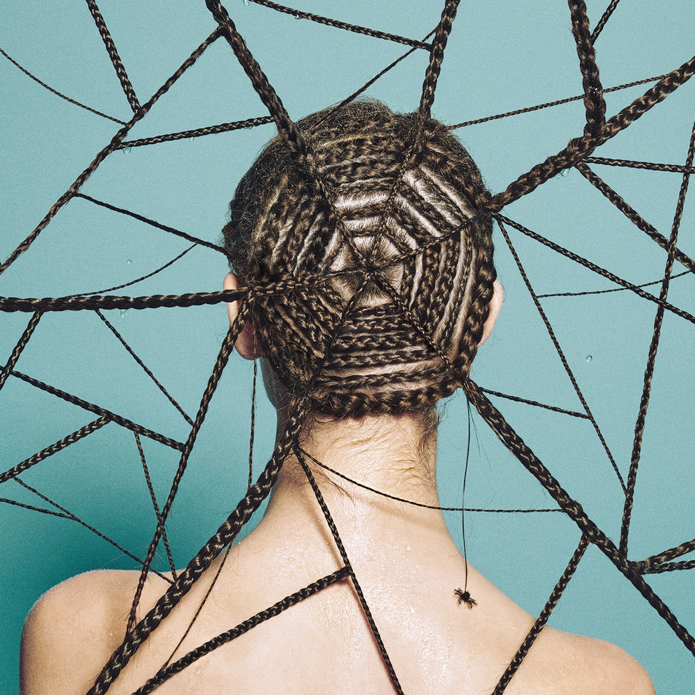

ぼくのりりっくのぼうよみ
(Reading My Lyrics Monotone)
 


F Minor / 125.057 BPM
ニコニコ動画に投稿したラップをきっかけに、17歳という若さで華々しくデビューした『ぼくりり』。「哲学的」と称される歌詞やどこか掴めないようなミステリアスな佇まいが人気を博し、デビュー以降、順調に階段を駆け上がってきたかのように見えましたが…2018年9月、「僕は天才を辞めます」発言で話題をかっさらった弱冠20歳の若き天才ミュージシャン・『ぼくのりりっくのぼうよみ』。現在は、来たる1月末の「引退」に向けて、Twitterを炎上させたり、YouTuberを始めて1日で辞めてみたりと世間を賑わせている様子。そんな天才に取材できることになったので、さまざまな記事を読み漁ってみたのですが、言葉が巧みすぎて何を言ってるのかよくわからない…。結局『ぼくりり』が引退するのは、事務所とのすれ違いなの？ 本人の意向なの？そこで、今回は凡人である私たちにもわかるように、これまでの経歴と引退する理由、さらに今後のこともわかりやすく教えてもらいました。
『目的がないと、なんとなくみんなが喜ぶことや良さげなことをしようっていう判断基準になってしまうんですよね。でも他人軸で考えると、「100%の正解」なんてないじゃないですか。あれが良いって言う人もいるし、ダメって言う人もいる。それに何度もぶつかると、脳がフリーズしちゃうんですよ。正解を外部に求めるのが愚かだったんです。そんな歪みの積み重ねで、ジェンガがどんどんズレていきました。だから、失敗したんです。』



“Bokuriri" made a spectacular debut at the young age of 17 with a rap song posted on Nico Nico Douga. However, in September 2018, a young genius of just 20 years old stole the headlines with his statement, "I'm quitting being a genius. Musician "Boku no Ririkku no Boyomi". Currently, he is making headlines for his upcoming "retirement" at the end of January by setting Twitter on fire and quitting YouTubering after just one day. Since I was able to interview such a genius, I read through various articles, but the language was too clever to understand what he was saying... In the end, is "Bokuriri" retiring because of a misunderstanding with the office? Is it his own intention? So, in order for us mere mortals to understand, we asked him to tell us about his career to date, the reason for his retirement, and what he plans to do in the future in an easy-to-understand manner.
“Without a purpose, we tend to make decisions based on what pleases everyone and what looks good. But if you think about it from someone else's perspective, there is no such thing as a 100% correct answer. Some people say it's good, others say it's not. When you repeatedly encounter such people, your brain freezes. It was foolish of me to seek the correct answer externally. The accumulation of such distortions caused the Jenga to shift more and more. That's why I failed."